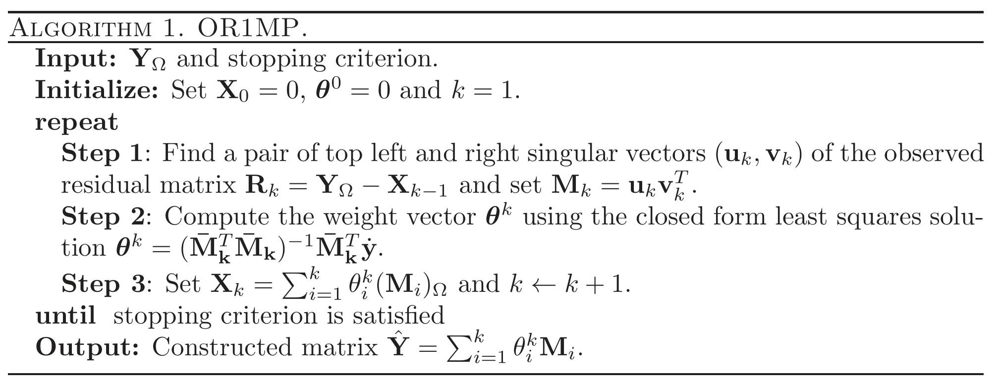
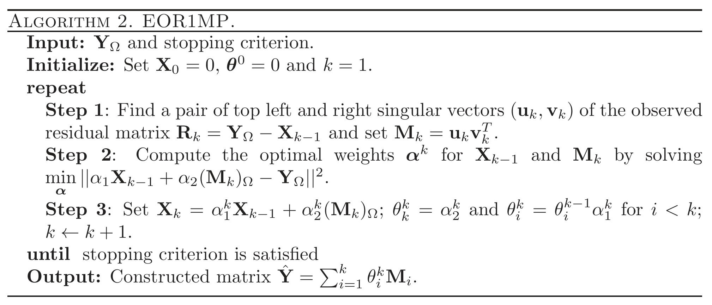
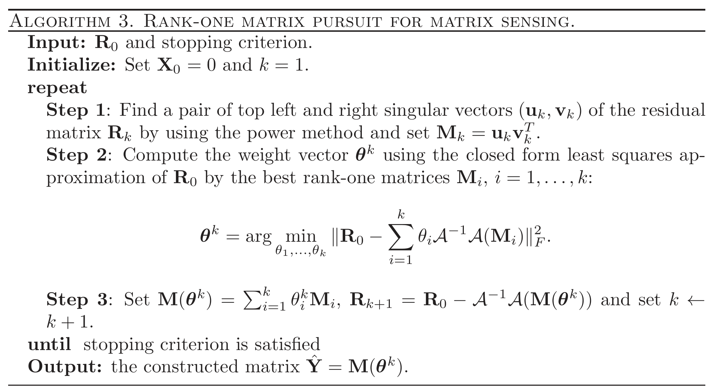

写在前面 前一个博客涉及到矩阵追踪的算法，因此补了一下相关文献, ^, ,
将正交匹配追踪算法从向量推广至矩阵版本 标准算法具有线性收敛速度 简化版算法降低了计算量并维持收敛速度 无需调参，理论上证明收敛性 将算法推广至更一般的矩阵感知问题 第一篇文章标题是矩阵补全的秩1矩阵追踪，第二篇标题为低秩矩阵补全的正交秩1矩阵追踪，两篇虽然字面意思相差在正交性上，但是基矩阵都是默认互正交的，所以应该是区分一下两个文章的，后者没有实际意义上的改进。
秩1矩阵追踪 众所周知，任意实矩阵可表示为若干个秩1矩阵的线性组合
X = M ( θ ) = ∑ i ∈ I θ i M i X=M(\boldsymbol\theta)=\sum_{i\in\mathcal I}\theta_i M_i
X = M ( θ ) = i ∈ I ∑ θ i M i
其中{ M i } \{M_i\} { M i } rank ( M i ) = 1 ， ∥ M i ∥ F = 1 \text{rank}(M_i)=1，\|M_i\|_F=1 rank ( M i ) = 1 ， ∥ M i ∥ F = 1
低秩矩阵近似问题常数找到θ \theta θ ℓ 0 \ell_0 ℓ 0
min θ ∥ θ ∥ 0 s.t. P Ω ( M ( θ ) ) = P Ω ( Y ) \min_\boldsymbol\theta \|\boldsymbol\theta\|_0 \quad\text{s.t.}\quad \mathcal P_\Omega(M(\boldsymbol\theta))=\mathcal P_\Omega(Y)
θ min ∥ θ ∥ 0 s.t. P Ω ( M ( θ ) ) = P Ω ( Y )
该问题也等价于稀疏约束下的优化问题：
min θ ∥ P Ω ( M ( θ ) ) − P Ω ( Y ) ∥ F 2 s.t. ∥ θ ∥ 0 ≤ r \min_\boldsymbol\theta \|\mathcal P_\Omega(M(\boldsymbol\theta))-\mathcal P_\Omega(Y)\|_F^2 \quad\text{s.t.}\quad \|\boldsymbol\theta\|_0\leq r
θ min ∥ P Ω ( M ( θ ) ) − P Ω ( Y ) ∥ F 2 s.t. ∥ θ ∥ 0 ≤ r
该问题可通过正交匹配追踪类型的贪婪算法来求解，其基(原子)M i M_i M i
如果字典{ M i : i ∈ I } \{M_i:i\in\mathcal I\} { M i : i ∈ I }
假设第k − 1 k-1 k − 1 M 1 , … , M k − 1 M_1,\ldots,M_{k-1} M 1 , … , M k − 1 θ ( k − 1 ) = ( θ 1 , … , θ k − 1 ) \boldsymbol \theta^{(k-1)}=(\theta_{1},\ldots,\theta_{k-1}) θ ( k − 1 ) = ( θ 1 , … , θ k − 1 ) k k k M k M_k M k θ k \theta_k θ k
基的追踪 令当前的残差R ( k ) = P Ω ( Y ) − X ( k − 1 ) R^{(k)}=\mathcal P_\Omega(Y)-X^{(k-1)} R ( k ) = P Ω ( Y ) − X ( k − 1 )
X ( k − 1 ) = ( M ( θ ( k − 1 ) ) ) Ω = ∑ i = 1 k − 1 θ i ( k − 1 ) ( M i ) Ω X^{(k-1)}=(M(\boldsymbol\theta^{(k-1)}))_\Omega=\sum_{i=1}^{k-1}\theta_i^{(k-1)} (M_i)_\Omega
X ( k − 1 ) = ( M ( θ ( k − 1 ) ) ) Ω = i = 1 ∑ k − 1 θ i ( k − 1 ) ( M i ) Ω
这个基M k ∈ R m × n M_k\in\mathbb R^{m\times n} M k ∈ R m × n R ( k ) R^{(k)} R ( k )
max M ⟨ M , R k ⟩ s.t. rank ( M ) = 1 , ∥ M ∥ F = 1 \max_M \left\langle M,R_k\right\rangle\quad\text{s.t.}\quad\text{rank}(M)=1,\|M\|_F=1
M max ⟨ M , R k ⟩ s.t. rank ( M ) = 1 , ∥ M ∥ F = 1
注意到具有单位F范数的秩1矩阵可用两个单位向量的乘积表示，即M = u v T M=\boldsymbol u\boldsymbol v^T M = u v T u ∈ R m , v ∈ R n \boldsymbol u\in\mathbb R^m,\boldsymbol v\in\mathbb R^n u ∈ R m , v ∈ R n ∥ u ∥ = ∥ v ∥ = 1 \|\boldsymbol u\|=\|\boldsymbol v\|=1 ∥ u ∥ = ∥ v ∥ = 1
max u , v u T R k v s.t. ∥ u ∥ = ∥ v ∥ = 1 \max_{\boldsymbol u,\boldsymbol v} \boldsymbol u^TR_k\boldsymbol v\quad\text{s.t.}\quad\|\boldsymbol u\|=\|\boldsymbol v\|=1
u , v max u T R k v s.t. ∥ u ∥ = ∥ v ∥ = 1
显然，最优解( u ∗ , v ∗ ) (\boldsymbol u_*,\boldsymbol v_*) ( u ∗ , v ∗ ) R k R_k R k M k = u ∗ v ∗ T M_k = \boldsymbol u_*\boldsymbol v_*^T M k = u ∗ v ∗ T
系数的更新 得到当前所有的基M 1 , … , M k − 1 , M k M_1,\ldots,M_{k-1},M_{k} M 1 , … , M k − 1 , M k θ ( k ) = ( θ 1 , … , θ k − 1 , θ k ) ∈ R k \boldsymbol \theta^{(k)}=(\theta_{1},\ldots,\theta_{k-1},\theta_{k})\in\mathbb R^{k} θ ( k ) = ( θ 1 , … , θ k − 1 , θ k ) ∈ R k
min θ ∥ ∑ i = 1 k θ i M i − Y ∥ Ω 2 \min_{\boldsymbol \theta}\|\sum_{i=1}^k\theta_iM_i-Y\|_\Omega^2
θ min ∥ i = 1 ∑ k θ i M i − Y ∥ Ω 2
将矩阵( Y ) Ω (Y)_\Omega ( Y ) Ω ( M i ) Ω (M_i)_\Omega ( M i ) Ω y ˙ \dot y y ˙ m ˙ i \dot m_i m ˙ i M ˉ k = [ m ˙ 1 , … , m ˙ k ] \bar M_k=[\dot m_1,\ldots,\dot m_k] M ˉ k = [ m ˙ 1 , … , m ˙ k ]
θ ( k ) = ( M ˉ k T M ˉ k ) − 1 M ˉ k T y ˙ \boldsymbol \theta^{(k)}=(\bar M_k^T\bar M_k)^{-1}\bar M_k^T\dot y
θ ( k ) = ( M ˉ k T M ˉ k ) − 1 M ˉ k T y ˙
R1MP算法 
收敛性结论 ⟨ R ( k + 1 ) , M i ⟩ = 0 , ∀ i = 1 , … , k \left\langle R^{(k+1)},M_i\right\rangle=0,\quad\forall i=1,\ldots,k
⟨ R ( k + 1 ) , M i ⟩ = 0 , ∀ i = 1 , … , k
∥ R ( k + 1 ) ∥ ≤ ∥ R ( k ) ∥ , ∀ k ≥ 1 \|R^{(k+1)}\|\leq\|R^{(k)}\|,\quad\forall k\geq 1
∥ R ( k + 1 ) ∥ ≤ ∥ R ( k ) ∥ , ∀ k ≥ 1
引入辅助变量θ ( k ) = θ ( k − 1 ) + η ( k ) \boldsymbol \theta^{(k)}=\boldsymbol \theta^{(k-1)}+\boldsymbol \eta^{(k)} θ ( k ) = θ ( k − 1 ) + η ( k )
η ( k ) = arg min η ∥ ∑ i = 1 k η i M i − R k ∥ Ω 2 \boldsymbol \eta^{(k)}=\arg\min_\boldsymbol\eta\|\sum_{i=1}^k \eta_iM_i-R_k\|_\Omega^2
η ( k ) = arg η min ∥ i = 1 ∑ k η i M i − R k ∥ Ω 2
记L ( k ) = ∑ i = 1 k η i ( k ) ( M i ) Ω L^{(k)}=\sum_{i=1}^k \eta_i^{(k)}(M_i)_\Omega L ( k ) = ∑ i = 1 k η i ( k ) ( M i ) Ω
X ( k + 1 ) = X ( k − 1 ) + L ( k ) , R ( k + 1 ) = R ( k + 1 ) − L ( k ) , ∥ R ( k + 1 ) ∥ 2 = ∥ R ( k ) ∥ 2 − ∥ L ( k ) ∥ 2 , ∥ L ( k ) ∥ 2 ≥ ⟨ R ( k ) , M k ⟩ . \begin{aligned}
X^{(k+1)}&=X^{(k-1)}+L^{(k)},\\
R^{(k+1)}&=R^{(k+1)}-L^{(k)},\\
\|R^{(k+1)}\|^2&=\|R^{(k)}\|^2-\|L^{(k)}\|^2,\\
\|L^{(k)}\|^2&\geq\left\langle R^{(k)},M_k\right\rangle.
\end{aligned}
X ( k + 1 ) R ( k + 1 ) ∥ R ( k + 1 ) ∥ 2 ∥ L ( k ) ∥ 2 = X ( k − 1 ) + L ( k ) , = R ( k + 1 ) − L ( k ) , = ∥ R ( k ) ∥ 2 − ∥ L ( k ) ∥ 2 , ≥ ⟨ R ( k ) , M k ⟩ .
∥ R k ∥ ≤ ( 1 − 1 min ( m , n ) ) k − 1 ∥ Y ∥ Ω , ∀ k ≥ 1 \|R_k\|\leq\left(\sqrt{1-\frac{1}{\min(m,n)}}\right)^{k-1}\|Y\|_\Omega,\quad\forall k\geq 1
∥ R k ∥ ≤ ( 1 − min ( m , n ) 1 ) k − 1 ∥ Y ∥ Ω , ∀ k ≥ 1
实际上，上界可以更小
∥ R k ∥ ≤ ∥ Y ∥ Ω ∏ i = 1 k − 1 1 − σ max 2 ( R i ) ∥ R i ∥ 2 \|R_k\|\leq\|Y\|_\Omega\prod_{i=1}^{k-1}\sqrt{1-\frac{\sigma_{\max}^2(R_i)}{\|R_i\|^2}}
∥ R k ∥ ≤ ∥ Y ∥ Ω i = 1 ∏ k − 1 1 − ∥ R i ∥ 2 σ m a x 2 ( R i )
因为∥ R i ∥ 2 σ max 2 ( R i ) \frac{\|R_i\|^2}{\sigma_{\max}^2(R_i)} σ m a x 2 ( R i ) ∥ R i ∥ 2 min ( m , n ) \min(m,n) min ( m , n )
注记 当Ω \Omega Ω 低秩表示可以用来去除(高斯)噪声 OMP是次线性收敛的，而OR1MP是线性收敛的 经济的秩1分解算法 R1MP算法需要同时处理所有的基和系数，耗时又耗复杂度的缺点不利于大规模的矩阵问题。
系数的更新 回到原来的系数更新问题
min θ ∥ ∑ i = 1 k θ i M i − Y ∥ Ω 2 \min_{\boldsymbol \theta}\|\sum_{i=1}^k\theta_iM_i-Y\|_\Omega^2
θ min ∥ i = 1 ∑ k θ i M i − Y ∥ Ω 2
在第k − 1 k-1 k − 1
X ( k − 1 ) = ( M ( θ ( k − 1 ) ) ) Ω = ∑ i = 1 k − 1 θ i ( k − 1 ) ( M i ) Ω X^{(k-1)}=(M(\boldsymbol\theta^{(k-1)}))_\Omega=\sum_{i=1}^{k-1}\theta_i^{(k-1)} (M_i)_\Omega
X ( k − 1 ) = ( M ( θ ( k − 1 ) ) ) Ω = i = 1 ∑ k − 1 θ i ( k − 1 ) ( M i ) Ω
如果我们将求和项分为两项a X ( k − 1 ) + b M k aX^{(k-1)}+bM_k a X ( k − 1 ) + b M k k − 1 k-1 k − 1 θ ( k − 1 ) \boldsymbol\theta^{(k-1)} θ ( k − 1 ) X ( k − 1 ) X^{(k-1)} X ( k − 1 ) { M i : i = 1 , … , k − 1 } \{M_i:i=1,\ldots,k-1\} { M i : i = 1 , … , k − 1 } M k M_k M k k − 1 k-1 k − 1 θ ( k − 1 ) \boldsymbol\theta^{(k-1)} θ ( k − 1 ) k k k θ k k \theta_k^k θ k k k k k θ ( k ) \boldsymbol\theta^{(k)} θ ( k )
α ( k ) = arg min α = { α 1 , α 2 } ∥ α 1 X ( k − 1 ) + α 2 M ( k ) − Y ∥ Ω 2 , \boldsymbol\alpha^{(k)}=\arg\min_{\boldsymbol\alpha=\{\alpha_1,\alpha_2\}}\|\alpha_1X^{(k-1)}+\alpha_2M^{(k)}-Y\|_\Omega^2,
α ( k ) = arg α = { α 1 , α 2 } min ∥ α 1 X ( k − 1 ) + α 2 M ( k ) − Y ∥ Ω 2 ,
其中α ∈ R 2 \boldsymbol\alpha\in\mathbb R^{2} α ∈ R 2
θ k ( k ) = α 2 ( k ) , θ i ( k ) = θ i ( k − 1 ) α 1 ( k ) , ∀ i < k . \theta_k^{(k)}=\alpha_2^{(k)},\quad\theta_i^{(k)}=\theta_i^{(k-1)}\alpha_1^{(k)},\forall i<k.
θ k ( k ) = α 2 ( k ) , θ i ( k ) = θ i ( k − 1 ) α 1 ( k ) , ∀ i < k .
对应的近似为
X ( k ) = ∑ i = 1 k θ i ( k ) ( M i ) Ω = α 1 ( k ) X ( k − 1 ) + α 2 ( k ) ( M k ) Ω . X^{(k)}=\sum_{i=1}^{k}\theta_i^{(k)} (M_i)_\Omega=\alpha_1^{(k)}X^{(k-1)}+\alpha_2^{(k)}(M_k)_\Omega.
X ( k ) = i = 1 ∑ k θ i ( k ) ( M i ) Ω = α 1 ( k ) X ( k − 1 ) + α 2 ( k ) ( M k ) Ω .
ER1MP算法 
收敛性结论 ⟨ R ( k + 1 ) , X ( k − 1 ) ⟩ = 0 , ⟨ R ( k + 1 ) , M k ⟩ = 0 \left\langle R^{(k+1)},X^{(k-1)}\right\rangle=0,\left\langle R^{(k+1)},M_k\right\rangle=0
⟨ R ( k + 1 ) , X ( k − 1 ) ⟩ = 0 , ⟨ R ( k + 1 ) , M k ⟩ = 0
∥ R ( k + 1 ) ∥ 2 = ∥ Y Ω ∥ 2 − ∥ X ( k ) ∥ 2 , ∀ k ≥ 1 \|R^{(k+1)}\|^2=\|Y_\Omega\|^2-\|X^{(k)}\|^2,\quad\forall k\geq 1
∥ R ( k + 1 ) ∥ 2 = ∥ Y Ω ∥ 2 − ∥ X ( k ) ∥ 2 , ∀ k ≥ 1
∥ R ( k + 1 ) ∥ ≤ ∥ R ( k ) ∥ , ∀ k ≥ 1 \|R^{(k+1)}\|\leq\|R^{(k)}\|,\quad\forall k\geq 1
∥ R ( k + 1 ) ∥ ≤ ∥ R ( k ) ∥ , ∀ k ≥ 1
如果X ( k − 1 ) X^{(k-1)} X ( k − 1 ) ( M k ) Ω (M_k)_\Omega ( M k ) Ω β ≠ 0 \beta\neq0 β = 0 X ( k − 1 ) = β ( M k ) Ω X^{(k-1)}=\beta(M_k)_\Omega X ( k − 1 ) = β ( M k ) Ω ∥ R ( k + 1 ) ∥ = ∥ R ( k ) ∥ \|R^{(k+1)}\|=\|R^{(k)}\| ∥ R ( k + 1 ) ∥ = ∥ R ( k ) ∥
⟨ R ( k ) , M k ⟩ = σ max ( R k ) ≥ ∥ R k ∥ min ( m , n ) \left\langle R^{(k)},M_k\right\rangle=\sigma_{\max}(R_k)\geq\frac{\|R_k\|}{\sqrt{\min(m,n)}}
⟨ R ( k ) , M k ⟩ = σ m a x ( R k ) ≥ min ( m , n ) ∥ R k ∥
设R k ≠ 0 R_k\neq0 R k = 0 β ≠ 0 \beta\neq0 β = 0 X ( k − 1 ) ≠ β ( M k ) Ω X^{(k-1)}\neq\beta(M_k)_\Omega X ( k − 1 ) = β ( M k ) Ω
∥ R ( k + 1 ) ∥ ≤ ∥ R ( k ) ∥ − σ max 2 ( R k ) ⟨ M k , M k ⟩ Ω \|R^{(k+1)}\|\leq\|R^{(k)}\|-\frac{\sigma_{\max}^2(R_k)}{\left\langle M_k,M_k\right\rangle}_\Omega
∥ R ( k + 1 ) ∥ ≤ ∥ R ( k ) ∥ − ⟨ M k , M k ⟩ σ m a x 2 ( R k ) Ω
∥ R k ∥ ≤ ( 1 − 1 min ( m , n ) ) k − 1 ∥ Y ∥ Ω , ∀ k ≥ 1 \|R_k\|\leq\left(\sqrt{1-\frac{1}{\min(m,n)}}\right)^{k-1}\|Y\|_\Omega,\quad\forall k\geq 1
∥ R k ∥ ≤ ( 1 − min ( m , n ) 1 ) k − 1 ∥ Y ∥ Ω , ∀ k ≥ 1
注记 OP1MP与EOP1MP都是线性收敛的，收敛结论一致 EOP1MP仅处理重构X ( k − 1 ) X^{(k-1)} X ( k − 1 ) M k M_k M k 两个算法收敛性的证明过程一致，只是OP1MP是对所有的基和组合，而EOP1MP的结论针对当前的基和前一代的重构成立 矩阵感知问题 考虑一个更一般的优化问题
min X ∈ R n × m rank ( X ) : A ( X ) = A ( Y ) \min_{ {\mathbf X}\in \mathbb R^{n \times m}} \text{rank}({\mathbf X}): {\mathcal A}({\mathbf X}) ={\mathcal A}({\mathbf Y})
X ∈ R n × m min rank ( X ) : A ( X ) = A ( Y )
其中Y {\mathbf Y} Y A {\mathcal A} A
A ( X ) = [ vec ( A 1 ) T ⋮ vec ( A d ) T ] vec ( X ) \mathcal{A}(\mathbf{X})=\left[\begin{array}{c}
\operatorname{vec}\left(\mathbf{A}_{1}\right)^{T} \\
\vdots \\
\operatorname{vec}\left(\mathbf{A}_{d}\right)^{T}
\end{array}\right] \operatorname{vec}(\mathbf{X})
A ( X ) = ⎣ ⎢ ⎢ ⎡ v e c ( A 1 ) T ⋮ v e c ( A d ) T ⎦ ⎥ ⎥ ⎤ v e c ( X )
使用矩阵与向量的转化
X n × m ⟺ mat vec vec ( X ) m n × 1 X_{n\times m}\overset{\text{vec}}{\underset{\text{mat}}{\Longleftrightarrow}}\text{vec}(X)_{mn\times 1}
X n × m mat ⟺ vec vec ( X ) m n × 1
则线性算子A {\mathcal A} A A − 1 {\mathcal A}^{-1} A − 1
A = A vec : R n × m → R d × 1 A − 1 = mat ∘ A † : R d × 1 → R n × m \begin{aligned}
\mathcal{A}&=\mathbf A\text{vec}:\mathbb R^{n\times m}\to\mathbb R^{d\times 1}\\
\mathcal{A}^{-1}&=\text{mat}\circ A^{\dagger}:\mathbb R^{d\times 1}\to\mathbb R^{n\times m}
\end{aligned}
A A − 1 = A vec : R n × m → R d × 1 = mat ∘ A † : R d × 1 → R n × m
令b = A ( Y ) = A vec ( Y ) , R 0 = A − 1 ( b ) \mathbf b={\mathcal A}({\mathbf Y})=\mathbf A\text{vec}(\mathbf Y),R_0=\mathcal{A}^{-1}(\mathbf b) b = A ( Y ) = A vec ( Y ) , R 0 = A − 1 ( b )

计算矩阵逆的技巧 OR1MP算法的第2步需要计算( M ˉ k M ˉ k ) − 1 ({\mathbf {\bar M}_k}{\mathbf {\bar M}_k} )^{-1} ( M ˉ k M ˉ k ) − 1
M ˉ k T M ˉ k = [ M ˉ k − 1 , m ˙ k ] T [ M ˉ k − 1 , m ˙ k ] , {\mathbf {\bar M}_k}^T{\mathbf {\bar M}_k} = [{\mathbf {\bar M}_{k-1}}, \dot{\mathbf m}_k]^T[{\mathbf {\bar M}_{k-1}}, \dot{\mathbf m}_k],
M ˉ k T M ˉ k = [ M ˉ k − 1 , m ˙ k ] T [ M ˉ k − 1 , m ˙ k ] ,
其逆矩阵也可分块
( M ˉ k T M ˉ k ) − 1 = [ M ˉ k − 1 T M ˉ k − 1 M ˉ k − 1 T m ˙ k m ˙ k T M ˉ k − 1 T m ˙ k T m ˙ k ] − 1 ({\mathbf {\bar M}_k}^T{\mathbf {\bar M}_k} )^{-1} = \begin{bmatrix} {\mathbf {\bar M}_{k-1}}^T{\mathbf {\bar M}_{k-1}} & {\mathbf {\bar M}_{k-1}}^T \dot{\mathbf m}_k \\ \dot{\mathbf m}^T_k{\mathbf {\bar M}_{k-1}}^T & \dot{\mathbf m}^T_k\dot{\mathbf m}_k \end{bmatrix}^{-1}
( M ˉ k T M ˉ k ) − 1 = [ M ˉ k − 1 T M ˉ k − 1 m ˙ k T M ˉ k − 1 T M ˉ k − 1 T m ˙ k m ˙ k T m ˙ k ] − 1
采用块反演的方法计算(blockwise inversion)
[ A + d A b b T A − d A b − d b T A d ] \begin{array}{lc}
\begin{bmatrix} {\mathbf A}+ d{\mathbf A} {\mathbf b} {\mathbf b}^T{\mathbf A}
& - d{\mathbf A} {\mathbf b} \\
- d {\mathbf b}^T{\mathbf A}
& {d}
\end{bmatrix}
\end{array}
[ A + d A b b T A − d b T A − d A b d ]
其中
A = ( M ˉ k − 1 T M ˉ k − 1 ) − 1 b = M ˉ k − 1 T m ˙ k d = ( b T b − b T A b ) − 1 \begin{aligned}
{\mathbf A} &= ({\mathbf {\bar M}_{k-1}}^T{\mathbf {\bar M}_{k-1}})^{-1}\\
{\mathbf b} &= {\mathbf {\bar M}_{k-1}}^T \dot{\mathbf m}_k\\
d &= ( {\mathbf b}^T {\mathbf b} - {\mathbf b}^T{\mathbf A}{\mathbf b} )^{-1}
\end{aligned}
A b d = ( M ˉ k − 1 T M ˉ k − 1 ) − 1 = M ˉ k − 1 T m ˙ k = ( b T b − b T A b ) − 1
增量式计算体现在以下两点
( M ˉ k − 1 T M ˉ k − 1 ) − 1 ({\mathbf {\bar M}_{k-1}}^T{\mathbf {\bar M}_{k-1}})^{-1} ( M ˉ k − 1 T M ˉ k − 1 ) − 1
除了逆矩阵以外，还需计算M ˉ k T y ˙ = [ M ˉ k − 1 T y ˙ , m ˙ k T y ˙ ] {\mathbf {\bar M}_k}^{T} {\dot{\mathbf y}}=[{\mathbf {\bar M}_{k-1}}^{T} {\dot{\mathbf y}}, \dot{\mathbf m}^T_k{\dot{\mathbf y}}] M ˉ k T y ˙ = [ M ˉ k − 1 T y ˙ , m ˙ k T y ˙ ]
References